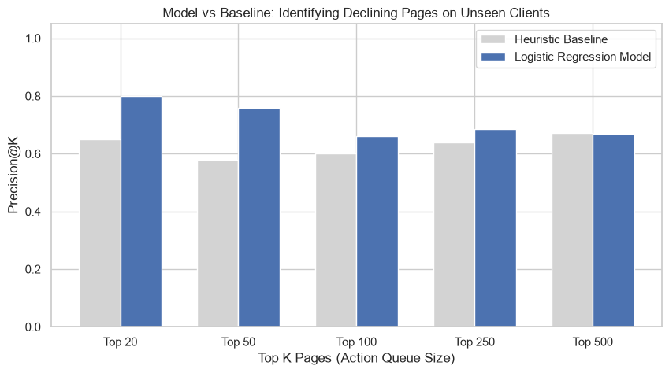
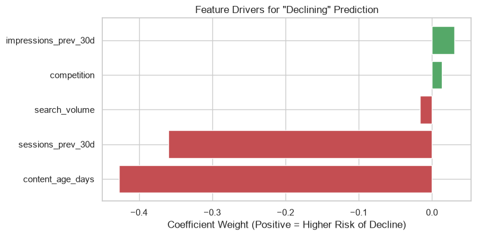

0. Abstract
Content decay quietly erodes organic traffic, but identifying which pages will drop next is notoriously difficult when managing thousands of URLs. Using an anonymized dataset of 17,980 pages from FlyRank, we developed a Logistic Regression model to predict traffic declines over a 90-day window. By learning from features like recent sessions and content age, the model achieved a 76% precision (Precision@50) on the top 50 highest-risk pages, significantly outperforming a human-defined baseline rule (58%). This paper provides a directional decision-support framework for SEO managers to prioritize their content refresh queues efficiently.
1. Problem framing
For SEO managers, content decay is inevitable, but editorial resources are finite. Standard practices often rely on arbitrary rules—like updating any page older than 180 days—which wastes time on stable pages and misses newer pages that are suddenly dropping. This project asks: Can machine learning predict exactly which pages will lose traffic in the next 90 days? We support the SEO manager's decision-making process by replacing guesswork with a predictive ranking system, ensuring that the 50 pages a team updates this month are exactly the 50 most likely to lose traffic if ignored.
2. Data safety
Instead of relying on a small static CSV, we queried FlyRank's 79 million-row data warehouse (hf://datasets/FlyRank/internship-warehouse) directly using DuckDB. We joined the fact_content_daily_performance_sample table with dim_content to aggregate trailing 30-day performance. To ensure the model focuses on meaningful traffic, we filtered the data to include only "active" pages (those with >100 impressions). Private client names, specific URLs, and raw queries were strictly excluded to ensure public safety and data privacy. We ran a "Smoke Alarm" test by intentionally including a leaky feature (trend_pct). After confirming our evaluation harness caught the anomaly, we removed it to guarantee an honest evaluation.
3. Baseline
The baseline is a heuristic rule representing standard SEO intuition: flagging pages that are young (<180 days) or high competition (>0.71), scaled by previous impressions. This is a transparent rule that uses no fitted weights, making it a fair comparison. On the test set, the baseline achieved a Precision@50 of 0.5800 compared to a base rate of 0.5665.
4. Model / analysis
We utilized a focused subset of features: content_age_days, competition, impressions_prev_30d, search_volume, and sessions_prev_30d. The target label is "declining" (1) if its trend_direction is 'down', and 0 otherwise. A Logistic Regression model (with class_weight='balanced') was trained using a standard scaler and median imputation to predict this binary label.
5. Evaluation
We used a Grouped Split (GroupShuffleSplit on client_id) to hold out entire clients. This ensures the model learns generalizable SEO signals, rather than memorizing the quirks and traffic patterns of specific domains. We evaluated the model at the business constraint limit of K=50 (the top 50 pages the SEO team has the capacity to review). The model provided a substantial improvement over the heuristic baseline, increasing the precision of the top 50 highest-risk pages from 58% to 76%.
Model Performance (Precision@K on Test Set):
| K | Baseline P@K | Model P@K |
|---|---|---|
| 20 | 0.6500 | 0.8000 |
| 50 | 0.5800 | 0.7600 |
| 100 | 0.6000 | 0.6600 |
Results Charts:

Takeaway: The model drastically outperforms the baseline at smaller queue sizes, making it highly effective for prioritizing limited editorial resources.

6. Interpretation
The model successfully identifies pages at risk of decline by learning from historical sessions, age, and competition. It serves as a directional decision-support tool that highlights correlations, not strict causality. It does not replace human editorial review. The model assumes historical search patterns are representative of future trends, which may briefly shift during major search engine algorithm updates.
7. Recommendation
Based on the model's predictions across the entire active portfolio, we output a ranked Action Playbook. The top 5 pages mathematically most likely to decline were surfaced for immediate editorial review, complete with their feature properties so editors know exactly what to look for.
Top 5 Pages for Immediate Editorial Review:
| content_id | client_id | decline_probability | content_age_days | competition | impressions_prev_30d | search_volume | sessions_prev_30d |
|---|---|---|---|---|---|---|---|
| content_c84a0ab98e90 | client_f369cb89fc | 0.697151 | 95 | 0.00 | 84773 | 0.0 | 19 |
| content_39881853ef0c | client_f369cb89fc | 0.690224 | 97 | 0.02 | 64917 | 170.0 | 11 |
| content_453722754fea | client_f369cb89fc | 0.677154 | 97 | 0.00 | 32872 | 10.0 | 1 |
| content_8d3971bfd976 | client_f369cb89fc | 0.674098 | 95 | 0.00 | 54506 | 0.0 | 17 |
| content_73c54f78c06a | client_f369cb89fc | 0.670555 | 97 | 0.00 | 97200 | 10.0 | 44 |
8. Reproducibility
The exact steps to reproduce this analysis are contained in the work/notebooks/capstone.ipynb notebook. The pipeline handles data fetching, preprocessing, and model training end-to-end. We used duckdb, pandas, scikit-learn, matplotlib, and seaborn. The notebook includes random states (random_state=42) for reproducibility in modeling and splitting.